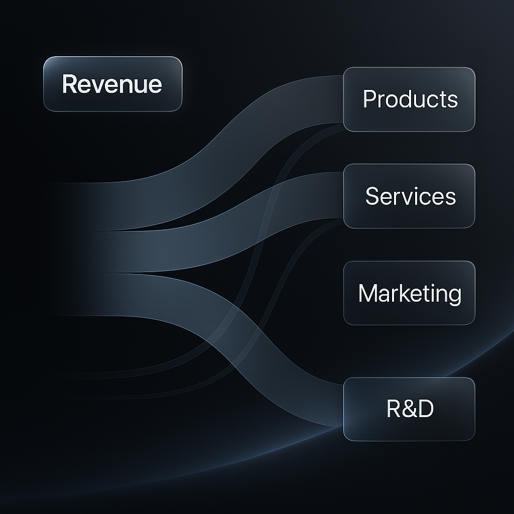
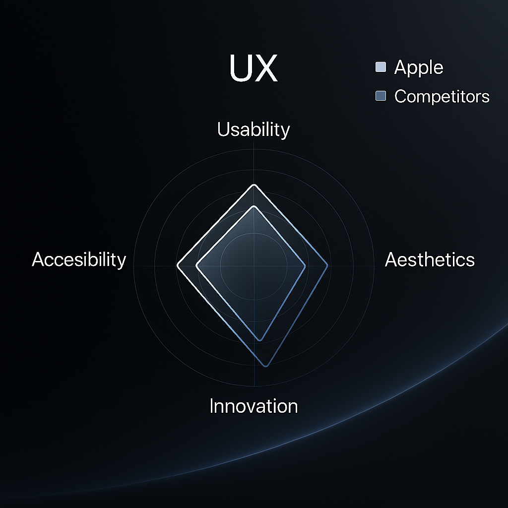
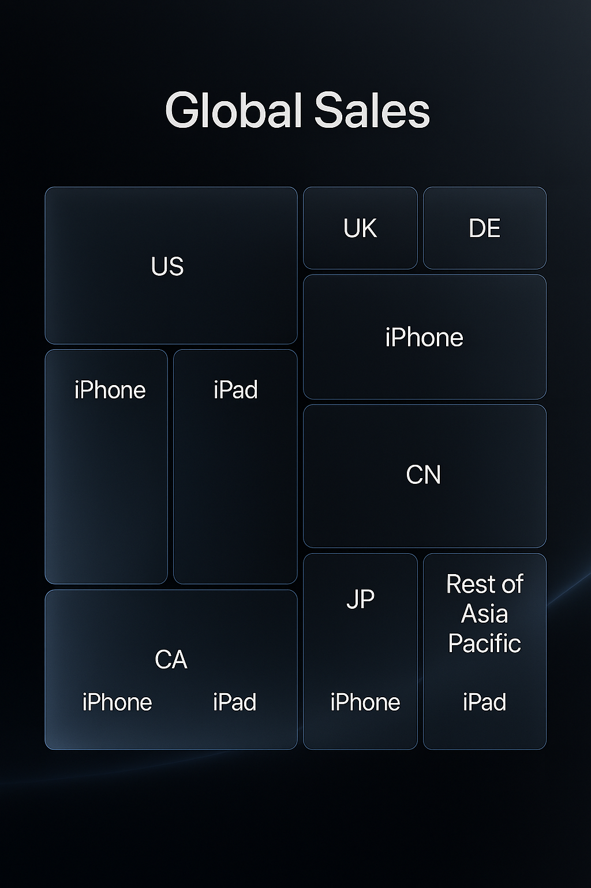
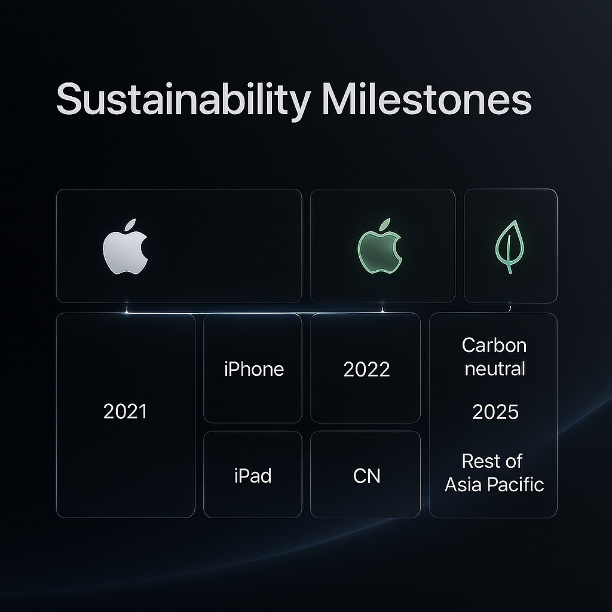

Strategic Benchmarking Analysis
Apple Inc. FY2024-25 Integration of Financial, UX, Sustainability, and Innovation Metrics
This repository presents a strategic benchmarking analysis of Apple Inc. for FY2024-25, integrating financial, UX, sustainability, and innovation metrics. Designed for consultants, recruiters, and strategists, it highlights advanced analytics and a holistic industry view.
Visual Analytics & Interactive Notebooks
All visualizations are Python-generated. Interactive version available in Google Colab.

Revenue Breakdown
Sankey: Product category FY2025
code/Sankey.py

UX Benchmark
Radar: Apple/Samsung/Google
code/RadarUX.py

Global Sales
Treemap: By region
code/Heatmap.py

Sustainability Path
Timeline: 2030 carbon neutral
code/ESG_Timeline.py
Methodology
Data Sources
SEC Filings, ESG Reports, Gartner/Forrester, JSTOR, APIs
Techniques
Ratio/Regression/Forecasting, Heuristics, PESTLE, Content Analysis
UX Standards
WCAG 2.2, ISO 9241-210
Apple Visual Palette
Repository Structure
./
├── assets/visuals/
├── code/
├── data/raw/
├── data/processed/
├── notebooks/apple_visuals_generator.ipynb
├── presentation/Apple_Benchmarking_FY24-25_Executive_Deck.pdf
└── README.mdTechnologies & Tools
Python
Data analysis and visualization
Jupyter
Interactive notebooks
Design
iOS 26 inspired interface
Analytics
Advanced data visualization
Sustainability Commitment
Apple's 2030 Carbon Neutral Goal
Apple is committed to becoming carbon neutral across its entire business, manufacturing supply chain, and product life cycle by 2030.